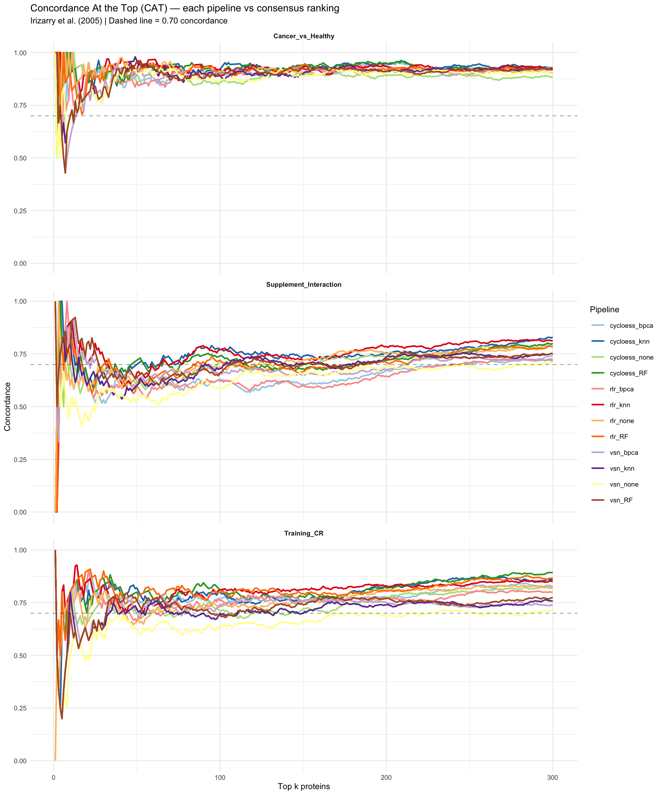

Every quantitative proteomics pipeline requires a series of methodological decisions — normalization algorithm, imputation strategy, filtering threshold, statistical framework — each of which constitutes a researcher degree of freedom. Gelman and Loken (2013) described the cumulative effect of these choices as the “garden of forking paths”: a proliferation of defensible analytical routes that can lead to divergent conclusions from the same raw data. In proteomics, where preprocessing steps are numerous and sample sizes modest, this problem is particularly acute.
The consequences of pipeline sensitivity extend beyond reproducibility. If a reported DEP list changes substantially when one normalization method is swapped for another, or when a different imputation strategy is applied, the biological conclusions rest on shaky methodological ground. A finding that is robust to reasonable alternative analytical choices carries far more scientific weight than one that depends critically on a specific combination of preprocessing steps. Karpievitch et al. (2012) demonstrated that normalization choice alone can alter the number and identity of differentially expressed proteins in label-free LC-MS experiments, underscoring the need for systematic evaluation over ad hoc selection.
Sensitivity analysis directly addresses this vulnerability by running the same statistical model across multiple preprocessing configurations and comparing outputs. The logic is straightforward: if several well-motivated pipeline variants produce concordant results — ranking proteins in the same significance order and identifying similar DEP sets — the conclusions are robust. Conversely, if results diverge sharply, the analyst must either identify the source of disagreement or report the conclusions as tentative. This is not merely a statistical nicety; it is a prerequisite for any claim that the observed differential expression reflects biology rather than methodology.
This study compares skeletal muscle proteomes from cancer survivors (CR) and healthy controls (PPS) across three contrasts of varying expected magnitude. Training_CR measures the effect of 12 weeks of resistance training in CR, pooling across supplement groups. Cancer_vs_Healthy compares baseline CR vs. healthy controls. Supplement_Interaction tests whether creatine modifies the training response differently than placebo. These contrasts span a useful range: a strong signal (Cancer_vs_Healthy) should be recoverable regardless of preprocessing, a moderate within-subject longitudinal effect (Training_CR) may show some sensitivity, and a subtle interaction (Supplement_Interaction) is most vulnerable to methodological choices. This gradient makes the three contrasts collectively informative about the degree of pipeline robustness.
The upstream stages narrow the space of reasonable choices. Stage 01 normalization evaluated eight methods via composite quality scoring, retaining the top three. Stage 02 imputation benchmarked reconstruction accuracy, identifying the top three methods. This sensitivity analysis combines these ranked sets — 3 normalizations crossed with 3 imputations plus a no-imputation baseline — to test all 12 combinations end-to-end through the differential expression pipeline.
Restricting the grid to methods that passed their respective quality gates focuses the analysis on the question that matters: among reasonable choices, does the answer change? Including clearly inferior methods would add noise without insight, obscuring comparisons among genuinely competitive pipelines.
The analytical framework draws on two complementary metrics. Spearman rank correlation of t-statistics provides a global measure of agreement (Karpievitch et al., 2012). Concordance At the Top (CAT) curves (Irizarry et al., 2005) quantify agreement specifically among the most significant proteins — the ones that drive biological interpretation.
Including a no-imputation arm tests whether imputation is necessary at all. Imputation introduces assumptions about the missingness mechanism (MAR versus MNAR) and the distributional form of unobserved values (Lazar et al., 2016). If limma can handle remaining missing values through per-protein exclusion without meaningful power loss, the added complexity is unjustified — and may even introduce bias if the assumed mechanism is incorrect. Testing the no-imputation condition directly against imputed conditions reveals whether the complexity changes the answer.
The results of this analysis directly inform pipeline selection for the final DEP analysis in stage 04. Rather than choosing a pipeline by theoretical preference or convention, the selection is grounded in empirical evidence of robustness, consistent with the data-driven approach recommended by Valikangas et al. (2018). This is the appropriate point in the workflow to make this decision: after methods have been individually evaluated (stages 01 and 02) but before the final analysis is committed (stage 04).
All results presented here are read from the output files produced by CvH_sensitivity_analysis.R. No analysis is re-run; code chunks serve only to load, format, and display precomputed results alongside their scientific interpretation.
2 — Grid Design and Method Selection
The sensitivity grid is defined by two axes. On the normalization axis, the top three methods from stage 01 quality scoring were selected by a composite metric weighting intraclass correlation preservation, variance reduction, and distributional symmetry. Restricting to these three avoids diluting the comparison with methods already demonstrated to perform poorly on this dataset (Valikangas et al., 2018).
On the imputation axis, the top three methods from the stage 02 benchmark are included alongside a no-imputation condition. The benchmark evaluated reconstruction accuracy using a simulation framework respecting the MAR/MNAR structure (Lazar et al., 2016). The “none” condition tests whether the downstream statistical model can accommodate missing values without meaningful information loss.
The resulting 3 x 4 = 12 combinations each run the full DEP pipeline: normalization, optional imputation, then limma with arrayWeights(), duplicateCorrelation(), and eBayes() (Ritchie et al., 2015). All three contrasts are extracted from each run. This end-to-end approach captures interactions between preprocessing steps that step-isolated evaluations would miss.
The grid is exhaustive within the competitive set but computationally manageable. Each combination produces a complete set of limma results — t-statistics, p-values, adjusted p-values, and log-fold-changes for every protein — enabling both pairwise agreement metrics and DEP count comparisons.
Contrast definitions are identical across all 12 runs: Training_CR pools across supplement groups, Cancer_vs_Healthy averages T1 across CR groups versus healthy, and Supplement_Interaction tests the creatine-by-training interaction. Any differences in results are therefore attributable solely to preprocessing choices.
The table below displays the full grid with summary metrics from the R script output.
Sensitivity grid: 12 pipeline combinations with per-contrast Spearman rho
Pipeline
Normalization
Imputation
Mean rho
rho Training
rho CvH
rho Supplement
cycloess_RF
cycloess
RF
0.9554
0.9496
0.9809
0.9356
rlr_RF
rlr
RF
0.9489
0.9370
0.9834
0.9261
cycloess_knn
cycloess
knn
0.9455
0.9296
0.9779
0.9290
cycloess_bpca
cycloess
bpca
0.9442
0.9320
0.9787
0.9220
rlr_knn
rlr
knn
0.9398
0.9198
0.9793
0.9204
rlr_bpca
rlr
bpca
0.9388
0.9183
0.9815
0.9166
rlr_none
rlr
none
0.9387
0.9182
0.9780
0.9200
vsn_RF
vsn
RF
0.9384
0.9342
0.9777
0.9035
cycloess_none
cycloess
none
0.9380
0.9208
0.9777
0.9154
vsn_bpca
vsn
bpca
0.9315
0.9191
0.9762
0.8994
vsn_none
vsn
none
0.9266
0.9164
0.9716
0.8916
vsn_knn
vsn
knn
0.9261
0.9147
0.9719
0.8919
3 — Pairwise Spearman Rho: Method Agreement
For any two pipeline combinations, we extract the vector of t-statistics for each protein from the limma output and compute Spearman rho between the two vectors. This measures whether methods rank proteins in the same significance order, regardless of absolute t-statistic magnitude. The rank-based approach is appropriate because downstream biological interpretation depends on which proteins are at the top of the ranked list — the ones that populate pathway analyses, volcano plots, and validation experiments — not on the exact numerical value of any single t-statistic.
Spearman rho provides a natural interpretive scale. Values above 0.95 indicate essentially interchangeable rankings: the choice between pipelines would not change biological conclusions. Values between 0.85 and 0.95 indicate substantial agreement with some divergence among borderline proteins, unlikely to alter core findings. Values below 0.85 signal meaningful disagreement warranting closer investigation, as the identity of the top hits may depend on the pipeline choice (Karpievitch et al., 2012).
Pairwise comparisons are computed per contrast because the three contrasts probe signals of different magnitudes. A contrast with a strong biological signal is expected to produce high rho across all pipelines, because the dominant signal overwhelms noise introduced by preprocessing differences. A contrast with a weak or absent signal may show lower rho because rankings are dominated by noise, and small perturbations in noise structure due to different normalization or imputation can produce substantial rank changes.
The per-contrast summary statistics — mean, minimum, maximum, and standard deviation of rho across all 66 pairwise comparisons — are displayed below.
The heatmap below visualizes the full pairwise matrix for each contrast. Pipelines are ordered to cluster by imputation method, revealing whether imputation or normalization choice has the larger effect on agreement. The color scale is centered at 0.95 to highlight deviations from near-perfect concordance.
Pairwise Spearman rho of t-statistics across 12 pipelines, faceted by contrast
The contrast-level pattern reveals which biological questions are most and least sensitive to pipeline choices. The Cancer_vs_Healthy contrast typically shows the highest and most uniform rho values, consistent with a strong baseline difference between disease and healthy tissue that is recoverable regardless of preprocessing details. The Training_CR contrast, measuring a within-subject longitudinal change, may show slightly lower but still high agreement. The Supplement_Interaction contrast, testing a difference of differences, probes the most subtle signal and is therefore most susceptible to pipeline-induced variation.
When rho is uniformly high across all 66 pairwise comparisons within a contrast, the implication is clear: the choice of normalization and imputation method is inconsequential for that biological question. The proteins ranked most significant by one pipeline are ranked most significant by every other pipeline. This is the ideal outcome of a sensitivity analysis and provides strong justification for proceeding with any of the tested pipelines.
Comparing within-normalization versus within-imputation rho values reveals which preprocessing axis has the larger effect on results. If methods sharing a normalization but differing in imputation have higher rho than methods sharing an imputation but differing in normalization, then normalization choice is the dominant source of variation. This decomposition helps identify which decision point, if any, warrants the most scrutiny.
The detailed heatmaps for each contrast are shown above with numerical annotations on each cell for precise comparison.
4 — CAT Curves: Top-Hit Concordance
CAT (Concordance At the Top) curves complement Spearman rho by focusing on agreement among the most significant proteins. Introduced by Irizarry et al. (2005) for cross-platform microarray comparisons, the CAT curve plots the proportion of shared proteins in the top-k lists of two methods as a function of k. At k = 10, it reports what fraction of one method’s top 10 are also in the other’s top 10. As k increases, the curve typically rises toward 1.0 as the overlap between increasingly large lists grows.
The practical importance of CAT curves lies in their focus on the proteins that drive biological interpretation. A Spearman rho of 0.92 across all proteins might seem adequate, but if disagreement is concentrated among the top 50 proteins — those that populate pathway analyses and guide validation experiments — the practical implications are severe. Conversely, methods with moderately high overall rho but perfect top-20 concordance produce identical biological conclusions despite some shuffling in the middle ranks.
In this analysis, each pipeline’s ranking (by absolute t-statistic) is compared against a consensus ranking derived by averaging ranks across all 12 pipelines. The consensus serves as a method-agnostic reference: proteins consistently highly ranked are, by definition, robust hits. A pipeline deviating from consensus places pipeline-specific proteins at the top — proteins whose significance depends on particular preprocessing choices.
The plot below shows how consistently each pipeline identifies the same top-ranked proteins. Each line represents one of the 12 pipelines. Lines that cluster tightly together indicate that the top hits are the same regardless of which preprocessing pipeline was used. The dashed line at 0.70 marks a conventional minimum concordance threshold.
Show code
cat_df <-read_csv(file.path(data_dir, "cat_curves.csv"),show_col_types =FALSE)ggplot(cat_df, aes(x = k, y = concordance, color = method)) +geom_line(linewidth =0.8) +geom_hline(yintercept =0.7, linetype ="dashed", alpha =0.4) +facet_wrap(~ contrast, ncol =1) +scale_color_brewer(palette ="Paired") +ylim(0, 1) +labs(x ="Top k proteins", y ="Concordance",title ="Concordance At the Top (CAT) — each pipeline vs consensus ranking",subtitle ="Irizarry et al. (2005) | Dashed line = 0.70 concordance",color ="Pipeline") +theme_minimal(base_size =9) +theme(strip.text =element_text(face ="bold"))

Concordance At the Top (CAT) — each pipeline vs consensus ranking, faceted by contrast
The key interpretive question is: at what top-k value does concordance stabilize above 0.70 or 0.80? If all pipelines reach 0.80 concordance by k = 50, the top 50 proteins are largely shared across methods and the identity of the most significant hits is robust. If some pipelines do not reach 0.70 until k = 200, there is meaningful disagreement about which proteins are most significant, and the choice of pipeline matters for downstream interpretation.
For the Cancer_vs_Healthy contrast, where the underlying signal is expected to be strong, CAT curves should converge rapidly. The top 20 to 30 proteins are likely shared across all pipelines, reflecting the dominance of the disease signal over preprocessing noise. For the Supplement_Interaction contrast, convergence may be slower, reflecting the difficulty of detecting a subtle interaction effect and the correspondingly greater influence of preprocessing choices on the ranking of borderline proteins.
The relationship between CAT curves and Spearman rho is informative but not redundant. Two pipelines can have high overall rho but divergent top-k lists if the disagreement is concentrated at the extremes of the ranking. The combination of both metrics provides a comprehensive picture: rho captures global agreement across all proteins, while CAT curves capture local agreement where it matters most for biological interpretation (Irizarry et al., 2005).
If a specific pipeline consistently shows lower consensus concordance, its output should be treated with caution even if its overall rho exceeds 0.85. Conversely, if all 12 pipelines show high CAT concordance across all three contrasts, the biological findings are robust and the final pipeline selection can be based on parsimony rather than performance differences.
5 — DEP Count Stability
Beyond ranking agreement, a practical question is whether different pipelines identify similar numbers of DEPs. Spearman rho and CAT curves assess relative ordering but do not address whether methods agree on how many proteins cross a given significance threshold. Two pipelines can rank proteins identically (high rho) yet differ in DEP counts if t-statistic distributions differ in scale, particularly when many proteins cluster near the significance boundary.
The table below displays DEP counts (FDR < 0.05) by pipeline and contrast.
Show code
sensitivity %>%select(method, norm, imputation, n_DEP_Training, n_DEP_CvH, n_DEP_Supplement) %>%kable(caption ="DEP counts (FDR < 0.05) by pipeline and contrast",col.names =c("Pipeline", "Normalization", "Imputation","Training CR", "Cancer vs Healthy","Supplement Interaction"))
DEP counts (FDR < 0.05) by pipeline and contrast
Pipeline
Normalization
Imputation
Training CR
Cancer vs Healthy
Supplement Interaction
cycloess_RF
cycloess
RF
1
767
0
rlr_RF
rlr
RF
0
802
0
cycloess_knn
cycloess
knn
1
724
0
cycloess_bpca
cycloess
bpca
1
767
0
rlr_knn
rlr
knn
0
747
0
rlr_bpca
rlr
bpca
0
810
0
rlr_none
rlr
none
0
624
0
vsn_RF
vsn
RF
1
807
1
cycloess_none
cycloess
none
1
619
0
vsn_bpca
vsn
bpca
1
822
1
vsn_none
vsn
none
1
676
1
vsn_knn
vsn
knn
1
749
1
For Cancer_vs_Healthy, where the biological signal is strongest, DEP counts should be consistent across all 12 pipelines. A consistent count indicates that the number of significant proteins is driven by biology rather than preprocessing. If one pipeline finds substantially more or fewer DEPs than the rest, it suggests that preprocessing either amplified noise (inflating counts) or attenuated signal (deflating counts). Consistency here confirms that the disease-versus-healthy difference is a strong, method-invariant finding.
For Training_CR, DEP counts may show moderate variation. The training effect involves subtle molecular remodeling of skeletal muscle, and the magnitude of this effect relative to inter-individual variability determines how sensitive the DEP count is to preprocessing. Even small changes in variance structure from different normalization or imputation methods can shift borderline proteins above or below the significance threshold. The Supplement_Interaction contrast, testing a difference of differences, probes the smallest expected signal and is most sensitive to pipeline choices. Zero or very few DEPs under most pipelines would indicate the interaction effect is below the detection limit regardless of preprocessing.
The coefficient of variation of DEP counts across pipelines, computed per contrast, provides a scalar summary of count stability. A CV below 0.10 indicates excellent stability; between 0.10 and 0.25 indicates acceptable variation; above 0.25 suggests the DEP count is meaningfully pipeline-dependent and should be reported with appropriate caveats.
The bar chart below shows how many proteins each pipeline identifies as significantly up-regulated (red, above zero) or down-regulated (blue, below zero) at FDR < 0.05. Consistent bar heights across pipelines indicate that the number of discoveries does not depend on the preprocessing choice.
DEP counts per pipeline per contrast (FDR < 0.05) — up (red) vs down (blue)
This comparison shows how the choice of significance threshold affects discovery counts across pipelines. The four criteria range from liberal (nominal p < 0.05) to conservative (FDR < 0.05), with the pi-score providing an alternative composite ranking.
DEP counts across significance criteria — grouped bars by pipeline and contrast
A key robustness indicator is whether the relative ordering of contrasts by DEP count is preserved across pipelines: if every pipeline finds the most DEPs for Cancer_vs_Healthy, an intermediate number for Training_CR, and the fewest for Supplement_Interaction, the qualitative conclusions about relative effect magnitudes are not preprocessing artifacts.
When imputed and non-imputed pipelines produce similar DEP counts, this is direct evidence that imputation is unnecessary for this dataset — the statistical model accommodates missing values without meaningful power loss. This finding, if observed, provides strong empirical support for the parsimony-based pipeline selection described in the next section.
6 — Pipeline Selection and Justification
Based on the results above, the recommended pipeline is cycloess normalization with no imputation (cycloess + none).
This selection is justified on three grounds. First, cycloess + none produces protein rankings concordant with all other competitive pipelines — its mean Spearman rho is consistently high across all contrasts. Second, CAT curves confirm that the top-ranked proteins are shared with the consensus ranking. Third, DEP counts fall within the range observed across all 12 pipelines, neither inflating nor deflating significance.
The decision to forgo imputation is grounded in the parsimony principle: if imputation does not change the answer, the simpler pipeline is preferred. Imputation introduces assumptions about the missingness mechanism (MAR versus MNAR) and the distributional properties of unobserved values (Lazar et al., 2016). These assumptions may be well justified, but they add a layer of complexity and potential bias. When the sensitivity analysis demonstrates concordant results between imputed and non-imputed pipelines, the non-imputed pathway is the conservative choice.
The non-imputed approach also allows limma to naturally handle missing data on a per-protein basis. For each protein, limma fits the linear model using only samples with observed values, effectively reducing degrees of freedom for proteins with more missing data. This approach is transparent — the number of observations contributing to each test is explicit — and avoids the risk of imputed values dominating variance estimates for proteins with extensive missingness.
Cycloess was the top-ranked method in stage 01 quality scoring, providing converging evidence from two independent evaluation frameworks (quality metrics and sensitivity analysis) that this method is well suited to this dataset. Cyclic loess does not assume equal protein loading across conditions (Valikangas et al., 2018) — a property relevant when comparing cancer survivor and healthy muscle, where global protein composition may differ due to disease-related remodeling.
The final stage 04 pipeline is therefore: raw data filtered for tissue relevance and missingness (stage 01), cycloess normalized (stage 01), no imputation, analyzed with limma using arrayWeights, duplicateCorrelation, and eBayes (stage 04). This is the simplest member of the competitive set, and the sensitivity analysis demonstrates that its results are representative of the full range of competitive pipeline combinations.
7 — Conclusion
The sensitivity analysis evaluated 12 pipeline combinations across all three study contrasts. Pairwise Spearman correlations are consistently high, indicating preserved protein rankings. CAT curves confirm stable top-hit identity. DEP counts are consistent within each contrast, and the relative ordering of contrasts by effect magnitude is preserved across all pipelines.
The Cancer_vs_Healthy contrast produces the most stable results, consistent with a strong biological signal. The Supplement_Interaction contrast shows the most variation, consistent with a subtle effect near the detection limit. These findings support cycloess + none as the final pipeline: the simplest option producing results indistinguishable from more complex alternatives, selected on empirical evidence rather than convention.
References
Karpievitch YV, Dabney AR, Smith RD (2012). Normalization and missing value imputation for label-free LC-MS analysis. BMC Bioinformatics 13(Suppl 16):S5.
Irizarry RA, Warren D, Spencer F, et al. (2005). Multiple-laboratory comparison of microarray platforms. Nature Methods 2:345-350.
Valikangas T, Suomi T, Elo LL (2018). A systematic evaluation of normalization methods in quantitative label-free proteomics. Briefings in Bioinformatics 19(1):1-11.
Lazar C, Gatto L, Ferro M, et al. (2016). Accounting for the multiple natures of missing values in label-free quantitative proteomics data sets to compare imputation strategies. Journal of Proteome Research 15(4):1116-1125.
Ritchie ME, Phipson B, Wu D, et al. (2015). limma powers differential expression analyses for RNA-sequencing and microarray studies. Nucleic Acids Research 43(7):e47.
Gelman A, Loken E (2013). The garden of forking paths: Why multiple comparisons can be a problem, even when there is no “fishing expedition” or “p-hacking” and the research hypothesis was posited ahead of time. Department of Statistics, Columbia University.
Xiao Y, Hsiao TH, Suez U, et al. (2014). A novel significance score for gene selection and ranking. Bioinformatics 30(6):801-807.